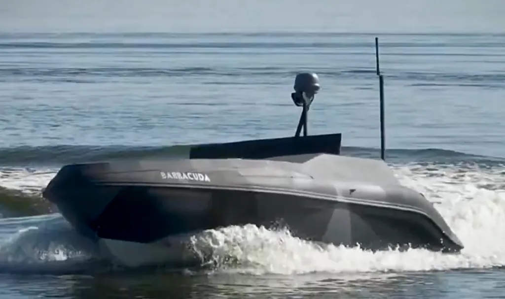
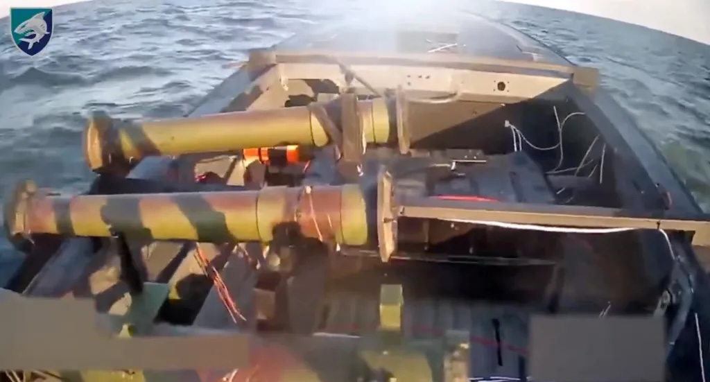
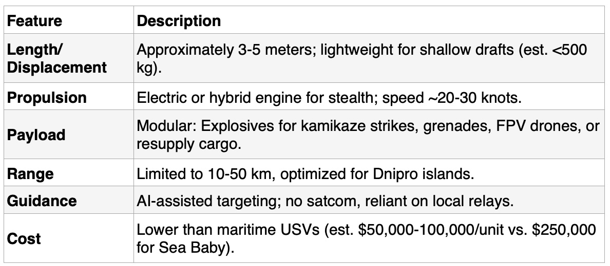
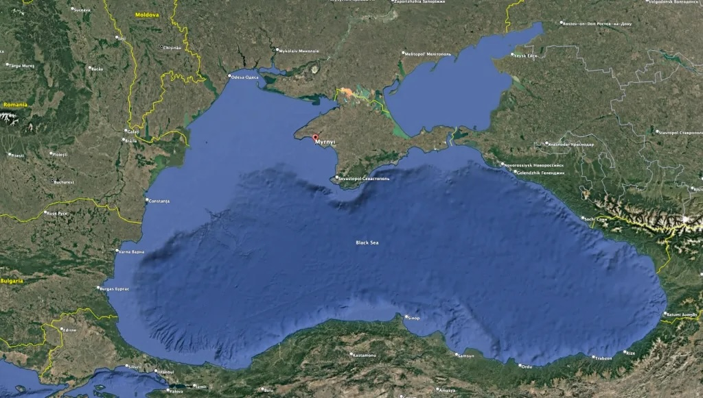

Ukraine's Drone Boats Strike Russian Forces, Riverine Warfare Escalating
The ongoing Russian x Ukrainian War has witnessed a paradigm shift in warfare, as well as naval warfare. Uncrewed surface vessels (USVs), drone boats, are emerging as pivotal assets in asymmetric confrontations.

Ukraine's recent expansion of USV operations from maritime domains, such as the Black Sea, to riverine environments, focusing on the deployment of the Barracuda USV along the Dnipro River and its tributaries. Drawing on open-source intelligence, military reports, and strategic analyses, we explore the technical attributes of the Barracuda, its operational efficacy against Russian targets, and the broader implications for riverine warfare.
We assess Russia's nascent USV program and Ukraine's preemptive strikes against it, highlighting the reciprocal adaptation in unmanned naval technologies. This analysis underscores how indigenous innovation and modular design enable resource constrained forces to challenge superior adversaries in contested waterways.
Since the full-scale Russian invasion of Ukraine in February 2022, unmanned systems have revolutionized combat dynamics, particularly in naval and aerial domains. Ukraine's Security Service (SBU) and Defense Intelligence Directorate (GUR) have pioneered the use of USVs like the Sea Baby and Magura series to disrupt Russian naval operations in the Black Sea, compelling the relocation of the Russian
Black Sea Fleet (BSF) from Sevastopol in occupied Crimea to Novorossiysk.
These operations have not only inflicted significant material losses damaging warships, infrastructure, and the Kerch Bridg. They have also demonstrated the cost-effectiveness of USVs in denying sea control to a conventionally superior navy.

Recent developments indicate an expansion of this strategy to inland waterways. In late December 2025, Ukraine's 40th Coastal Defense Brigade of the 30th Marine Corps unveiled footage of the Barracuda USV executing strikes on Russian riverine targets along the Dnipro River. This marks a tactical evolution, adapting maritime drone technologies to the complex, shallow, and island-dotted terrain of the Dnipro delta in the Kherson region.
The shift is driven by the stalemate following Ukraine's recapture of Kherson City in November 2023, where neither side has mounted large-scale cross-river assaults due to vulnerabilities to artillery, drones, and mines. Instead, operations have devolved into small-unit skirmishes, with USVs providing a low-risk means to interdict enemy logistics and positions.
This article synthesizes primary sources from Ukrainian military announcements, video evidence, and secondary analyses to evaluate the Barracuda's role. It also contextualizes Russia's emerging USV capabilities and Ukraine's countermeasures, drawing on trends in unmanned maritime systems observed throughout the conflict.
USV Employment in the Russo-Ukrainian War
Unmanned surface vessels have been integral to Ukraine's naval strategy since the war's early phases. Initial deployments targeted high-value assets, such as the BSF's flagship Moskva (sunk in April 2022, though primarily by Neptune missiles, with USVs in supporting roles) and subsequent attacks on Sevastopol harbor in October 2022, involving coordinated USV-UAV swarms. By 2025, Ukraine's USV arsenal had matured, with models like the Sea Baby capable of multi-role operations: one-way kamikaze strikes, aerial drone launches, and even anti-air engagements against Russian aircraft.
The transition to riverine applications reflects lessons from Black Sea successes. The Dnipro River, a 2,200 km waterway bisecting Ukraine, has become a frontline since the Kherson liberation. Russian forces occupy the left bank, using islands and inlets for staging areas, while Ukrainian troops hold the right bank. The river's width (up to 1 km in places) and dense vegetation facilitate ambushes but complicate manned crossings. USVs mitigate these risks by enabling remote strikes, resupply, and reconnaissance.
Comparative historical precedents include U.S. riverine operations in Vietnam (e.g., Mobile Riverine Force) and modern asymmetric naval warfare in the Yemen conflict, where Houthi USVs have targeted shipping. In Ukraine, this evolution aligns with broader unmanned trends by mid-2025, over 70% of Russian casualties were attributed to drones, per open-source estimates.
Technical Specs and Dev of the Barracuda USV
The Barracuda USV, developed indigenously by the 40th Coastal Defense Brigade's special unit, represents a modular, cost-effective adaptation for riverine warfare. Unveiled in early 2025, it is designed for short-range missions, lacking satellite communications present in longer-endurance models like the Magura V5 (range: ~800 km). Instead, it relies on line-of-sight control or aerial relays (e.g., drones), with partial AI guidance for waypoint navigation.
Key specifications, inferred from Ukrainian announcements and video analysis:

This design prioritizes affordability and simplicity for low-priority targets, contrasting with sophisticated Black Sea variants. Video evidence from December 2025 shows the Barracuda navigating inlets, striking a camouflaged Russian boat and outpost, resulting in explosions captured by overhead drones. AI integration, though details are sparse, likely involves computer vision for obstacle avoidance and target acquisition, akin to FPV drones used in tandem.
Development underscores Ukraine's decentralized innovation: the Barracuda unit self-designed and produced the vessel, leveraging crowdfunding and domestic manufacturing. This mirrors broader Ukrainian USV evolution, with over a dozen models documented by 2025.
Operational Deployment on the Dnipro River
The Barracuda's debut operations in December 2025 targeted Russian patrol boats, logistics bases, and outposts in the Dnipro delta. A released video depicts the USV infiltrating wetlands, detonating on a machine-gun-equipped boat and adjacent site, causing visible destruction. Ukrainian forces have integrated Barracudas with FPV drones for hybrid attacks, enhancing precision in cluttered environments.
These strikes form part of a sustained campaign since Kherson's liberation, where riverine control is contested through mine-laying, demining, and supply runs. Ukrainian reports claim multiple successes, including interdictions of Russian troop transports. However, challenges persist limited range restricts operations to near-shore areas, and Russian countermeasures such as use of FPV drones and artillery have inflicted losses.
Russian Countermeasures and USV Development
Russia's response to Ukrainian USV dominance has been multifaceted. By mid-2025, Moscow initiated its own USV program, forming dedicated units and conducting initial strikes. The first confirmed Russian USV attack occurred in August 2025, targeting a Ukrainian reconnaissance ship in the Danube River mouth. Subsequent developments include mothership UAVs for logistics targeting and Gerbera drones, though pre-launch strikes by Ukraine have disrupted deployments.
Anticipating escalation, Ukraine preemptively struck a Russian USV storage site in occupied Crimea's Mirny area on December 24, 2025, via deep-strike drones or missiles. The Ukrainian General Staff reported hits on maintenance facilities, though damage assessments remain ongoing. Russian forces have countered with layered defenses, including boom barriers and drone swarms, but vulnerabilities persist in riverine zones.

Strategic Implications
The Barracuda's integration into Dnipro operations exemplifies how USVs democratize naval power, allowing Ukraine to contest Russian dominance without a traditional fleet. Strategically, it sustains pressure on occupied territories, disrupts logistics, and forces resource allocation to defenses. For Russia, accelerating USV adoption could symmetrize the threat, potentially escalating to hybrid attacks on Ukrainian infrastructure.
Broader implications for global warfare include the proliferation of affordable unmanned systems in littoral and riverine conflicts, challenging doctrines reliant on manned platforms. NATO analyses highlight Ukraine's innovations as models for asymmetric defense.
Ukraine's deployment of the Barracuda USV on the Dnipro River signifies a maturation of unmanned naval tactics, extending from open seas to confined waterways. While not targeting high-value assets, these operations bolster defensive postures and preempt Russian advances. As both sides refine USV technologies, the conflict continues to serve as a laboratory for future warfare. Sustained international support for Ukrainian innovation will be crucial in maintaining this edge.
Analysis By The Societal News Team 27DEC2025